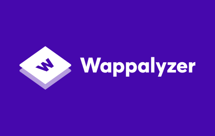

Wappalyzer
Wappalyzer é uma ferramenta que identifica tecnologias utilizadas em sites, como sistemas de gerenciamento de conteúdo, frameworks, bibliotecas JavaScript, ferramentas de análise, provedores de hospedagem e muito mais. É amplamente usada para análise de concorrência, pesquisa de mercado e segurança.
Principais Funcionalidades:
- Detecta automaticamente tecnologias web em sites
- Identifica CMS, frameworks, bibliotecas, servidores e bancos de dados
- Disponível como extensão de navegador e API
- Relatórios detalhados sobre as tecnologias encontradas
- Facilita pesquisas de mercado e análise de concorrentes
Recomendado para:
Desenvolvedores, analistas de segurança, profissionais de marketing digital e qualquer pessoa interessada em descobrir quais tecnologias estão por trás de sites.
🔗 Site Oficial